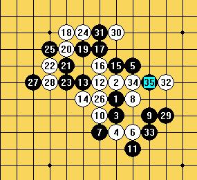
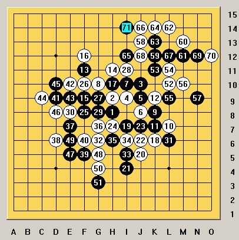
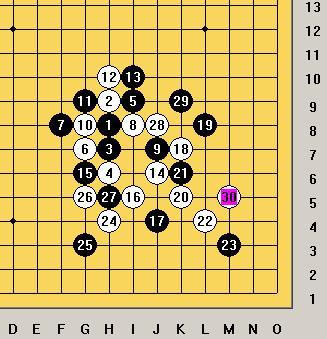
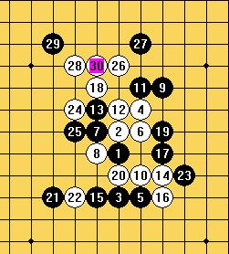

比较偶然的机会，我加入了炫飞2队去参加了这次在石家庄的全团赛。
自2005年全国赛后，就没参加过任何现实中的比赛。对五子棋我说不上热衷，却是来来回回的，一直都离开不了，自己热爱的东西，想说放弃也不是那么容易吧。去之前有一种很兴奋的感觉，却只是因为能见到许多年不见的那些棋友。
我和混混，无聊，豆豆在同一个队，混混和无聊分别取得了去年全国赛的13和21名，应该说还是有一定实力的。豆豆给我的印象是一个很爱闹的小女生，一直说我长得又丑又猥琐，弄得我一直有上去揍她一顿的冲动~
领队会后，很诧异的发现自己居然成了第一台，而无聊混混豆豆分别是3到4台。这和我们原本的安排有一些冲突，大鱼和组委会争了很久，却也改变不了台次的安排了。
第一轮我们碰上了东道主河北队，我对段然（网名木头鱼）。因为头天晚上大鱼告诉了我不少松2和松3白棋的变化，开局我开出了松月。
段然交换后的5手让我有点挠头，就是在网上，最后一次下这个5手都是好多年前的事了。当时差点想直接考他的必胜点，可是段然曾经拿过无禁比赛的冠军，让我打消了这个念头。
第6手我想了10多分钟，算了很多个7手之后发现黑并没有太多的优势。段然的第7手落得很快，让我觉得我是下对了定式，8到14手我没有再有更多的考虑。黑棋的第15手让我感觉到有漏洞，不巧的是，肚子痛，于是我跑去wc了。。。
回来之后，很随手的落下了18，黑棋19很简单的一盖，让我觉得很郁闷。想了半天，攻也攻不动，防也不好，于是硬着头皮了下去。就这么一直到28手，被黑棋成功的拿到了先手并落下了让我彻底崩溃的29手。
29手落下之后，我已经想投了，看了几个防点都已经死了，很无奈的，我下出了30和32，期待对手能大意给我留下机会。
段然果然没有让我失望，落下了能让他郁闷半生的33手，送了一个禁手给我。。
第一盘，就这么很侥幸的赢了。炫飞2队也赢了，我们打了个开门红。

第2轮，我们碰上了实力强劲的上海2队。而一台是实力强大的朱建锋。
他开出的疏星局，让我觉得很是欣慰，因为目前的研究疏星除了一打还没有别的打点结论是黑有优势。朱建锋的黑7是一个比较新的变化，但在网上来说，应该也不是那么新鲜了，一直到12手，我还是比较熟悉的，但是后面我就没怎么下过了。朱建锋的13很稳健，14我很谨慎的跟着。就这么一直交换到17手，黑并没有给白留下太多的机会，18手是我能看到棋盘上唯一的好点。19手是我预料中的一步，攻守兼备。我落下22手之前，算了很久黑棋23下在i8的变化，那样黑棋应该还是有一定优势的。朱建锋的23让我有点意外，25手做v，26唯一防，一直交换到31，黑也防住了白棋。32利用先手逼迫黑棋交换，否则黑在下边能杀。一直到39。40的选择让我有点踌躇，考虑了很久要不要在d9跳出去，又担心跳出去之后在左下会丢失先手。。。于是很猥琐的直接防了一步，一直到51。。我成功的拿到了先手，黑也很成功的限制住了左上白棋的发展。
52开始转移阵地，一直到63，黑棋下出了一路的唯一防。71之后，我只剩下了10分钟的时间，很无奈的提和。
因为无聊和豆豆输了，我们1.5：2.5惜败给上海2队。

第3轮，碰上了河北邯郸队
我再次开出了松月开局，很遗憾的是，对手交换后下出了个我不会的第9手，准备的变化再次落空。。
黑棋的15，17给了我太多的机会，之后我简单胜了。
因为对手实力比较弱，我们4：0拿下了这一场。

第一天的比赛我们得了2分，相对来说还是挺不错的。我个人也比较满意。
第4轮是对上海市3队，实力是上海队伍中最弱的。很可惜的是，我们这一场却输了。
我的对手是樊星岑，头天晚上打听到他挺弱的。现在很想把说他弱的人扁一顿，不过也有可能是我更弱，嘿
他给我开出了瑞星，我直接给交换了，下出了最新研究的13手。
14手15是研究中的，16却是我一直忽略的一个点。17和18交换后，我看了下局面感觉白还稍微好点，有点嘀咕怎么搞成这样了。19到23，脑子里一片空白，下得也很快，白的24手落下之后，我却发现自己已经输了。而对手，也没有再给我任何机会。
这一场，我们输了。

第5轮，碰上的是米兰领军的河南队，因为除了米兰其他几个人都不认识。谁都以为他们不强。就因为这个错误，让我们这一场全体败北。
我的对手是一个叫荆卫军的。
哈哈，顶下